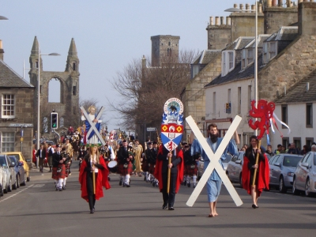

|
 |
In 2024 Chance magazine conducted an interview with me.
In August 2019 I was co-presenter of a mini-course about `Laplacian eigenvalues and optimality' during the G2D2 conference and PhD summer school at Yichang, China.
In November 2017 I presented a short course on `Relations among partitions' at Shanghai Jiao Tong University.
In May 2015 I was admitted as a Fellow of the Royal Society of Edinburgh.
In 2015 I was co-organizer of a one-week workshop on Design and Analysis of Experiments in Healthcare at the Isaac Newton Institute in Cambridge, 6–10 July 2015; co-organizer of the Donald Preece Memorial Day at QMUL on 17 September 2015; and co-presenter of a short course on 29 November 2015 about `Multiphase experiments: from design to analysis' at the meeting of the Australasian Region of the International Biometric Society in Hobart.
From August to September 2014 I held a Hood Fellowship at the University of Auckland. From January to June 2013 I was G. C. Stewart Fellow at Caius College Cambridge. From October to December 2010 I was McMaster Visiting Fellow at CSIRO, Australia's Commonwealth Scientific and Industrial Research Organisation, visiting Adelaide and Canberra.
In 2011, I gave a Friday Evening Discourse at the Royal Institution on ``From Rothamsted to Northwick Park: designing experiments to avoid bias and reduce variance''.
My first job was as a technician in the Medical Research Council's Air Pollution Research Unit at St Bartholomew's Hospital Medical College. I entered data, and helped to analyse it, in the pre-computer age. My second was as a teacher of Mathematics and French at Queen Elizabeth School in Ilorin, Nigeria, working with Voluntary Service Overseas. We volunteers had all of two weeks' training in teaching, and I had to pick up the French on the spot after the French teacher left.
My first and second degrees were both in Mathematics, at the University of Oxford, where I was a member of St Hugh's College. My DPhil thesis was about finite permutation groups; I was supervised by Graham Higman.
I joined the fledgling Open University in 1972. During my time there I was seconded to the Statistics Department in the University of Edinburgh, where I held a Science Research Council post-doctoral research fellowship. Under the supervision of Desmond Patterson of the Agricultural Research Council's Unit of Statistics, I converted myself into a statistician, learning about design of experiments by immersing myself in Fisher's, Yates's and Nelder's papers, listening to my ARCUS colleagues, and teaching an MSc course on the subject.
Wanting to gain some practical experience of real experiments, I joined the Statistics Department of Rothamsted Experimental Station in 1981, intending to stay for two years. I ended up staying for ten.
In 1991 I moved back into academia, being Professor of Mathematical Sciences at Goldsmiths College in the University of London and then Professor of Statistics at QMUL. In both places I spent four years as head of department or school.
Research activities include
In my previous university jobs, I taught a range of courses on Probability, Statistics, Combinatorics and Algebra.
At QMUL, I introduced a new MSc course on Association Schemes. This led eventually to my book Association Schemes: Designed Experiments, Algebra and Combinatorics.
Page always under construction